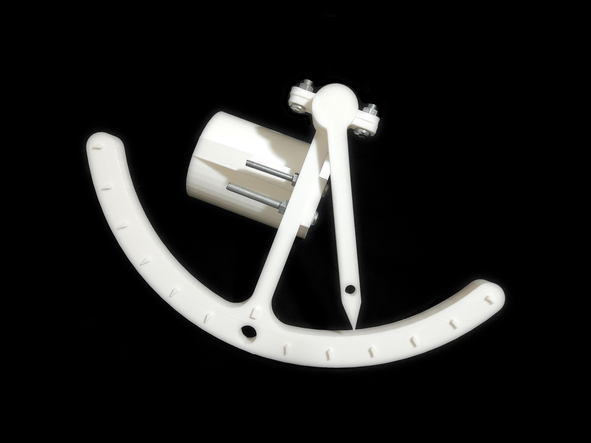
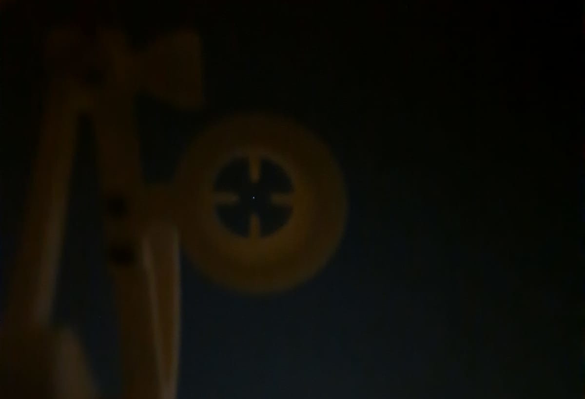
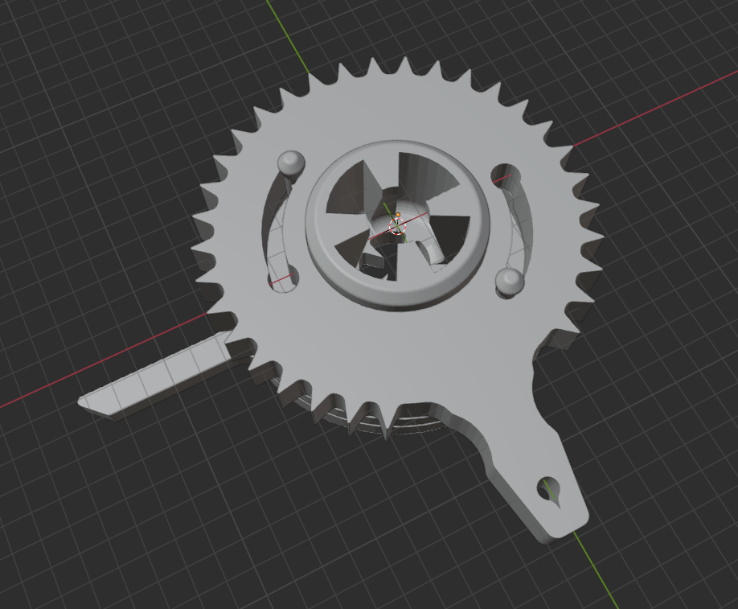
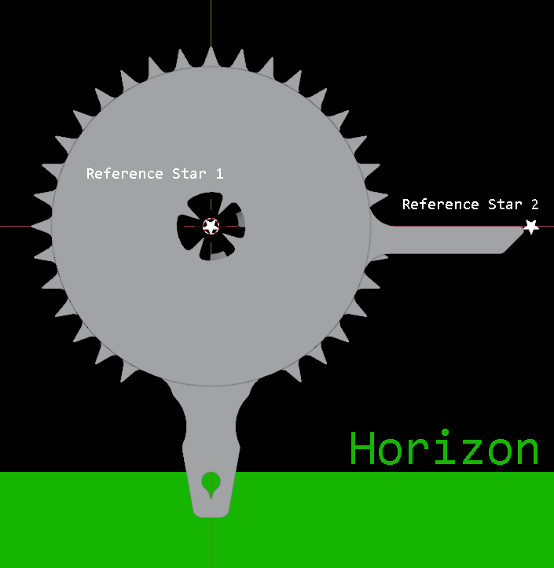
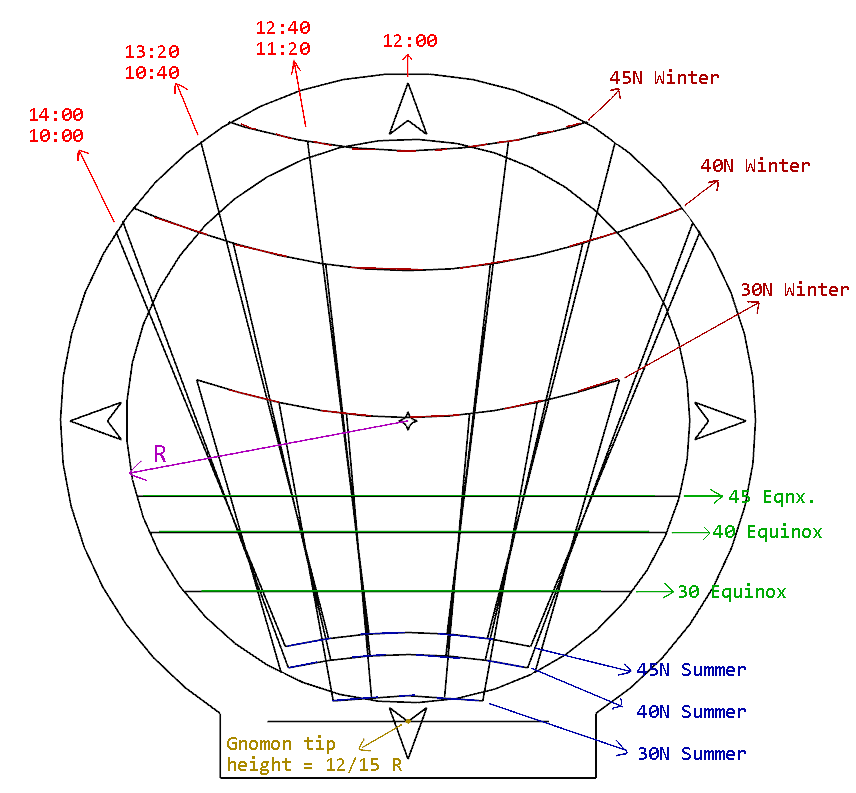
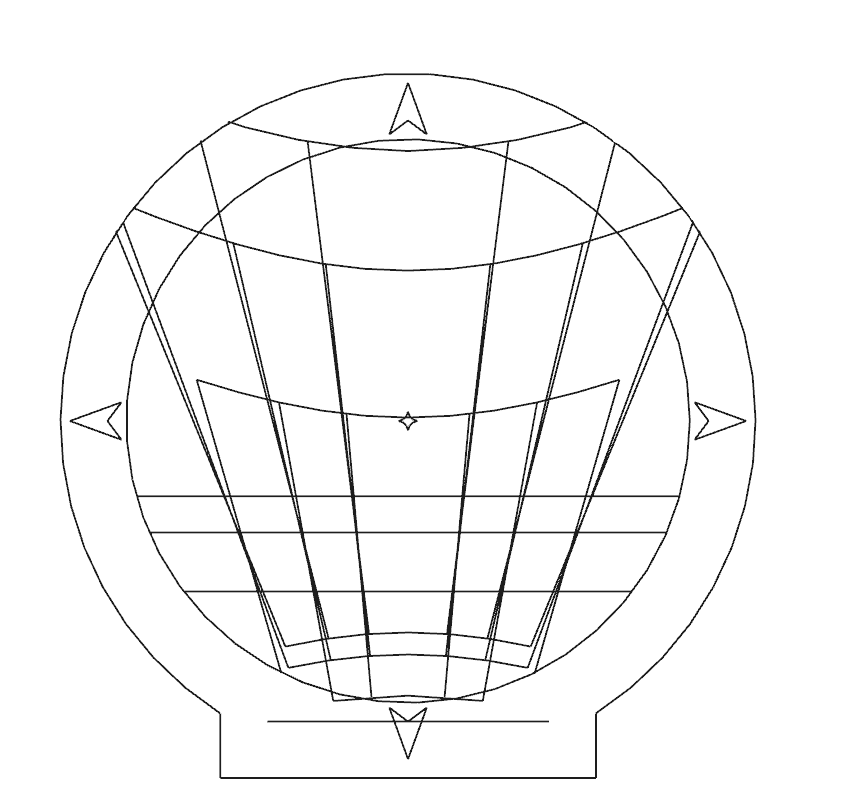

If you like DIY, or history of astronomy (or sailing!), or both; you might find yourself fascinated by early instruments. I wanted to have some instruments on my own, so I designed a few. With the help of hindsight, I also improved slightly upon the classical versions of some of the instruments. The instruments presented here rely on the same principles historical ones have used, but the specific designs and the calculations that go into them are of my own.
For information on radio astronomy equipment, see the "(Amateur) Radio Astronomy" page via the button at the top of this page.

The gravity sextant.
A sextant to use when on steady terrain. Unlike the marine sextant, this one doesn't rely on mirrors, just the gravitational acceleration. Therefore don't expect it to work too well when you are on the deck of a ship rocking back and forth as the waves crash into the hull.

Targeting Saturn through the sight.
You look through the sight and target your celestial body (eg. Polaris) and once steady on target, press the indicator to the side with your finger to lock it in place. You can then take your eye off the target and read the indicator's angle. For better alignment, there is also a hole through which you can attach more weight to the indicator arm.

Nocturnal design as seen in Blender. I didn't take any images for the 3D print of this one.
The nocturnal (or nocturlabe) is for determining time at night by looking at the alignment of certain celestial objects and the local horizon. You keep the handle arm perpendicular to the horizon, target one star through the center sight, and rotate the indicator arm to measure the angle of the two reference stars relative to the horizon. As long as your Earth coordinates are the same every time you take a measurement, the angle will be correlated with the local time. If you move, you will need to calibrate it again for that location.

Guide for using the nocturnal.

Guide for using the nocturnal.
This is less based on historical instruments. It is essentially a mapping/correlation tool between one's latitude, local time of the day and the time of the year. If you know any two, you can find the other by looking at where the shadow of the tip of the gnomon (the shadow stick). You will need to use a magnetic compass or some other indicator to align the compass with the local directions (North, East, South, West) before you can use it accurately. This version presented here was built to work around 30 to 45 degrees latitudes, but other versions can be derived for other latitudes.
The horizontal curves are the lines which the shadow is expected to trace for different latitudes. The vertical lines are the azimuth angles on which the shadow should appear at 40, 80 and 120 minutes before or after noon, with the shadow appearing exactly on the N-S line at noon.


Plans for my solar nomogram. Please give credit if distributed or used for non-personal activities.
arda-guler, 2021 - 2026. All Rights Reserved.